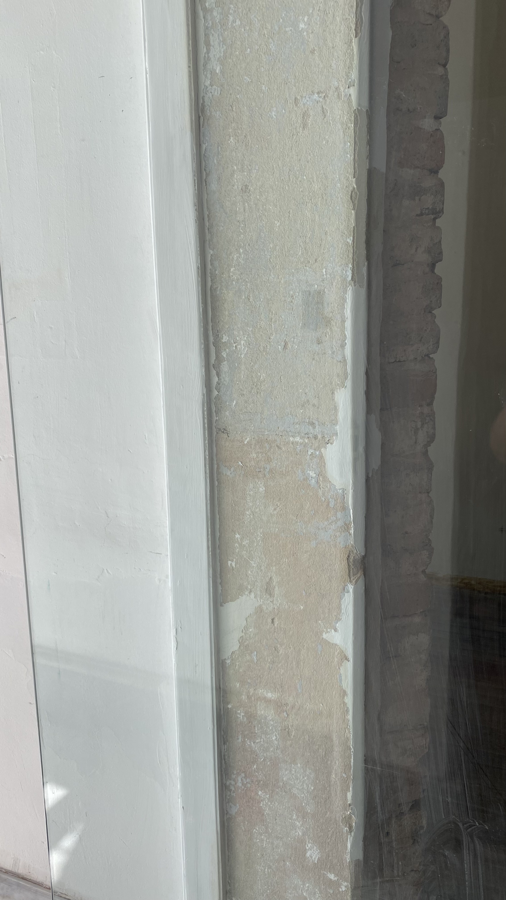
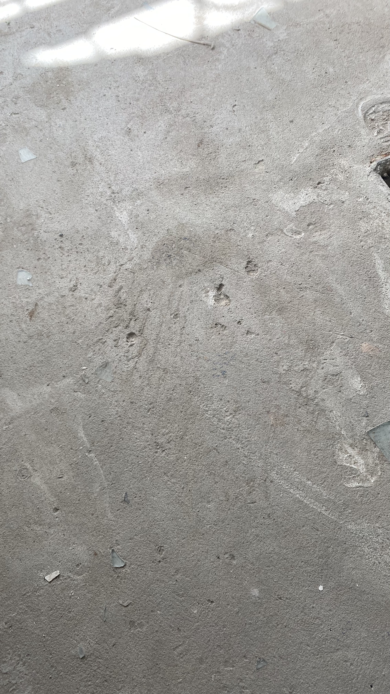
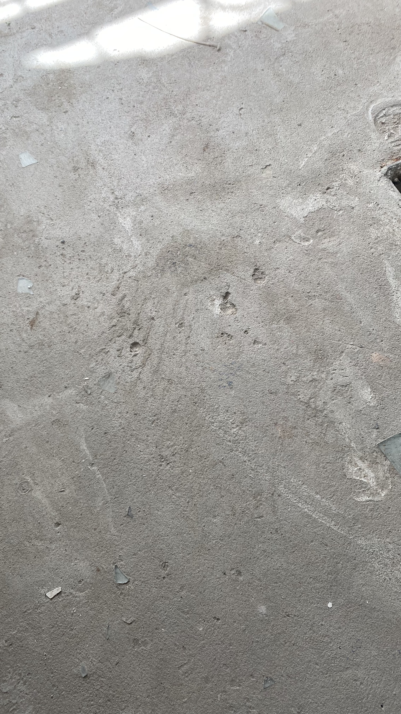

1. FACHADA
1.a Pared pintada con pintura látex de interior
Siendo una pared de exterior, es la cuestión más básica antes de pintar una superficie.
1.b Marcos de la ventana de madera pintados con la misma pintura que la pared
Cuando se debería haber usado pintura para madera.
1.c Marcos de la ventana pintados por la mitad
1.d Puertas de hierro pintadas con la misma pintura que la pared
Cuando el material es diferente.
1.e Capas de pintura insuficientes
1.f Pintado sobre superficie sin lijar ni masillar, sin las manos de pintura suficientes y en partes ni siquiera pintado
Lleno de imperfecciones.
1.g Pintura no uniforme
1.h Vidrios de la puerta que se encontraban en perfecto estado fueron rotos para generar vidrio reciclable
Lo cual no tiene ningún tipo de sentido, generando así un gasto extra para reponerlos.
2. HALL DE INGRESO
2.a Pared pintada sobre superficie sin lijar ni masillar
2.b Pared donde se encuentra el marco sin pintar
2.c Partes donde ni siquiera está pintado
2.d Pared rayada
3. SALON PRINCIPAL
3.a Revoque hueco no preparado para pintar
Muchas partes no estaban aptas para ser pintadas, el que ejecutó el trabajo debería haberse dado cuenta que muchas paredes estaban huecas y hacer el trabajo correspondiente.
3.b Ladrillos vistos sin material fijador
3.c Pared supuestamente terminada
3.d Paredes pintada sobre superficie sin lijar ni masillar
4. PISO
4.a La carpeta directamente se desgrana con una espátula
La carpeta es prácticamente arena, se desgrana simplemente con una espátula como se puede ver en el siguiente video:
tal es así que apoyamos una escalera de aluminio y quedó hundido:
4.b Dos cámaras de inspección tapadas por la carpeta
Las cámaras de inspección que deberían ser de fácil acceso fueron totalmente tapadas por la carpeta quedando inaccesibles (a menos que se rompa el piso).
4.c Cámara de inspección con escombros adentro
Una de las cámaras de inspección no solo estaba tapada por la carpeta si no que en el interior había desechados escombros y ladrillos apilados.

4.d Carpeta no está nivelada y posee muchísimas imperfecciones
 

4.e Sin juntas de dilatación
Cuando se unen dos materiales con distintos coeficientes de dilatación debe colocarse un material que amortigüe dicha diferencia. A diferencia de ese material lo que fue colocado fue esto (ver video):

4.f Material brilloso (posiblemente para evitar desgranamiento) presente en la carpeta
4.g Varias tonalidades de colores
4.h El contrapiso no estaba preparada para hacer el piso
El que ejecutó el trabajo tendría que haberlo evaluado previamente
4.i Hay partes donde no había contrapiso que fué directamente rellenados con polvo de ladrillo
4.j El ingreso no esta ni siquiera hecho
4. ESCRITORIO DE LADRILLO
4.a La pared realizada para el escritorio se parte al mínimo contacto, como se puede ver la mezcla es pura arena:
4.b El mortero esta mal ejecutado con excedente de arena
6. DEPÓSITO
6.a Cerámicos del piso pintados con pintura no adecuada para la superficie
6.b Capas de pintura insuficientes
6.c Los vidrios de la puerta que estaban en perfecto estado fueron rotos para generar vidrio reciclable
Nuevamente, sin ningún tipo de sentido, generando así un gasto extra.
.jpeg)
7. COCINA
7.a Cerámicos pintados con pintura que no es la adecuada (misma con la que fue pintada la pared)
Se sale pasándole agua con un dedo
7.b Puerta pintada con la misma pintura que fueron pintados los ceramicos
7.c La puerta presenta manchas
7.d Capas de pintura insuficientes
7.e La única ventana por donde entra luz en la cocina fué tapada, siendo pintada en un lado azul y en el otro verde
8. PATIO
8.a Se colocaron cerámicos de vereda exterior que hizo que el nivel del patio quede mas alto que el nivel interior
Se inundó el local, el depósito y el baño a la primer lluvia
8.b Se pintó el piso con pintura latex
Se despintó barriendo con agua
8.c Se pintaron las juntas con aerosol
8.d Las juntas están mal selladas
Tal es así que cuando se levanto el piso ya se había filtrado agua con pintura por abajo como se puede ver en la siguiente foto:

8.e Las paredes tienen descascaramientos, distintas tonalidades de azul y hay partes que estan pintadas con aerosol


8.f El vidrio que da al patio fue manchado con pintura
8.g Se pintaron los marcos de las ventanas sobre la silicona donde estaban pegadas las ventanas
Ahora para poner el nuevo vidrio hay que sacar la silicona vieja y con ella toda la pintura.
9. BAÑO EXTERIOR
9.a Piso y artefactos totalmente pintado de verde con pintura latex de interior no adecuada para la superficie
Se sale simplemente pisando